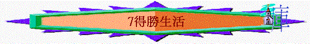
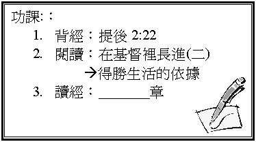

一．
聖潔的目標
1.
為何要聖潔？
（帖前3:13、4:3）
2. 何謂聖潔？
二.
現實的失敗
在現實生活中你又覺得自己是否聖潔？
為何失敗？
1.
魔鬼的試探
（太4:
1-2）
2.
（約一2:16-17）
3.
（羅8:5）
三.
至終的得勝
我們又如何的得勝？
1.
信心（約壹5:4）
＊信什麼？
信：主的命令不難守（約壹5:3）
ˍˍˍˍˍˍˍ（羅7:25）
ˍˍˍˍˍˍˍ（猶24）
ˍˍˍˍˍˍˍ（約壹1:8-9）
2.
脫離卑賤的事（提後2:21-22）
＊你認為何謂卑賤的事？
3.
逃避私慾（提後2:21-22）
4.儆醒祈禱（提後2:21-22）
5.
一同追求（提後2:21-22）
以上的方法，試分享你自己最缺乏是那一方面？
